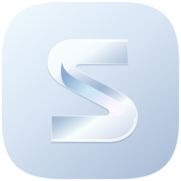

01 / PRISM
Liquid glass
sonin
sonin
Sculpted ribbon. Soft light. Quiet typography.
Pearl / glacier / steel / ink
One-colour master
02 / PULSE
Bold music brandsonin
sonin
Forward-cut S. High contrast. Bold typography.
Electric rose / blush / white / carbon
One-colour master
03 / UNISON
Minimal luxurySONIN
SONIN
Opposing sound forms. A monochrome seal.
Obsidian / pewter / silver / porcelain
One-colour master